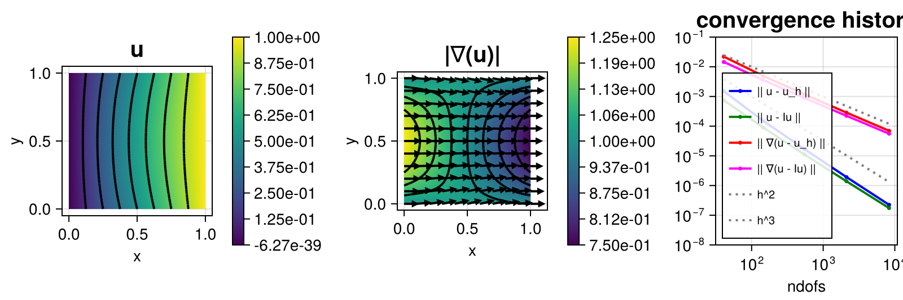

220 : Reaction-Convection-Diffusion-Problem
This example computes the solution of some convection-diffusion problem
\[-\nu \Delta u + \mathbf{\beta} \cdot \nabla u + \alpha u = f \quad \text{in } \Omega\]
with some diffusion coefficient $\nu$, some vector-valued function $\mathbf{\beta}$, some scalar-valued function $\alpha$ and inhomogeneous Dirichlet boundary data.
We prescribe an analytic solution with $\mathbf{\beta} := (1,0)$ and $\alpha = 0.1$ and check the L2 and H1 error convergence of the method on a series of uniformly refined meshes. We also compare with the error of a simple nodal interpolation and plot the solution and the norm of its gradient.
For small $\nu$, the convection term dominates and pollutes the accuracy of the method. For demonstration some simple gradient jump (interior penalty) stabilisation is added to improve things.
The computed solution for the default parameters looks like this:

module Example220_ReactionConvectionDiffusion
using ExtendableFEM
using ExtendableGrids
using LinearAlgebra
const α = 0.01
const β = [1.0, 0]
const ν = 1.0e-5
function u!(result, qpinfo)
x = qpinfo.x
result[1] = x[1] * x[2] * (x[1] - 1) * (x[2] - 1) + x[1]
return nothing
end
function ∇u!(result, qpinfo)
x = qpinfo.x
result[1] = x[2] * (2 * x[1] - 1) * (x[2] - 1) + 1
result[2] = x[1] * (2 * x[2] - 1) * (x[1] - 1)
return nothing
end
function Δu!(result, qpinfo)
x = qpinfo.x
result[1] = 2 * (x[2] * (x[2] - 1) + x[1] * (x[1] - 1))
return nothing
end
function rhs()
∇u = zeros(Float64, 2)
Δu = zeros(Float64, 1)
u = zeros(Float64, 1)
return function closure(result, qpinfo)
∇u!(∇u, qpinfo)
u!(u, qpinfo)
Δu!(Δu, qpinfo)
result[1] = -ν * Δu[1] + α * u[1] + dot(β, ∇u)
return nothing
end
end
function kernel_DCR!(result, input, qpinfo)
u, ∇u = view(input, 1), view(input, 2:3)
result[1] = α * u[1] + dot(β, ∇u)
result[2] = ν * ∇u[1]
result[3] = ν * ∇u[2]
return nothing
end
# kernel for exact error calculation
function exact_error!(result, u, qpinfo)
u!(result, qpinfo)
∇u!(view(result, 2:3), qpinfo)
result .-= u
result .= result .^ 2
return nothing
end
# stab_kernel!
function stab_kernel!(result, ∇u, qpinfo)
result .= ∇u .* qpinfo.volume^2
return nothing
end
# everything is wrapped in a main function
function main(; Plotter = nothing, τ = 1.0e-2, nlevels = 5, order = 2, kwargs...)
# create problem description
PD = ProblemDescription("reaction-convection-diffusion problem")
u = Unknown("u")
assign_unknown!(PD, u)
assign_operator!(PD, BilinearOperator(kernel_DCR!, [id(u), grad(u)]; bonus_quadorder = 1, kwargs...))
assign_operator!(PD, LinearOperator(rhs(), [id(u)]; bonus_quadorder = 2, kwargs...))
assign_operator!(PD, InterpolateBoundaryData(u, u!; regions = 1:4, kwargs...))
# add a gradient jump (interior penalty) stabilisation for dominant convection
if τ > 0
assign_operator!(PD, BilinearOperatorDG(stab_kernel!, [jump(grad(u))]; entities = ON_IFACES, factor = τ))
end
# prepare error calculation
ErrorIntegratorExact = ItemIntegrator(exact_error!, [id(1), grad(1)]; quadorder = 2 * order, kwargs...)
Results = zeros(Float64, nlevels, 4)
NDofs = zeros(Int, nlevels)
# refinement loop over levels
sol = nothing
xgrid = grid_unitsquare(Triangle2D) # initial grid
for level in 1:nlevels
# uniform mesh refinement
xgrid = uniform_refine(xgrid)
# generate FESpace and solve
FES = FESpace{H1Pk{1, 2, order}}(xgrid)
sol = solve(PD, FES)
# compute L2 and H1 errors and save data
NDofs[level] = length(sol.entries)
error = evaluate(ErrorIntegratorExact, sol)
Results[level, 1] = sqrt(sum(view(error, 1, :)))
Results[level, 3] = sqrt(sum(view(error, 2, :)) + sum(view(error, 3, :)))
# interpolate (just for comparison)
I = FEVector(FES)
interpolate!(I[1], u!)
error = evaluate(ErrorIntegratorExact, I)
Results[level, 2] = sqrt(sum(view(error, 1, :)))
Results[level, 4] = sqrt(sum(view(error, 2, :)) + sum(view(error, 3, :)))
end
# plot
plt = plot([id(u), grad(u)], sol; add = 1, ncols = 3, Plotter = Plotter)
plot_convergencehistory!(plt[1, 3], NDofs, Results; add_h_powers = [order, order + 1], X_to_h = X -> X .^ (-1 / 2), legend = :lb, ylabels = ["|| u - u_h ||", "|| u - Iu ||", "|| ∇(u - u_h) ||", "|| ∇(u - Iu) ||"], limits = (1.0e-8, 1.0e-1))
# print convergence history
print_convergencehistory(NDofs, Results; X_to_h = X -> X .^ (-1 / 2), ylabels = ["|| u - u_h ||", "|| u - Iu ||", "|| ∇(u - u_h) ||", "|| ∇(u - Iu) ||"])
return Results, plt
end
end # moduleThis page was generated using Literate.jl.